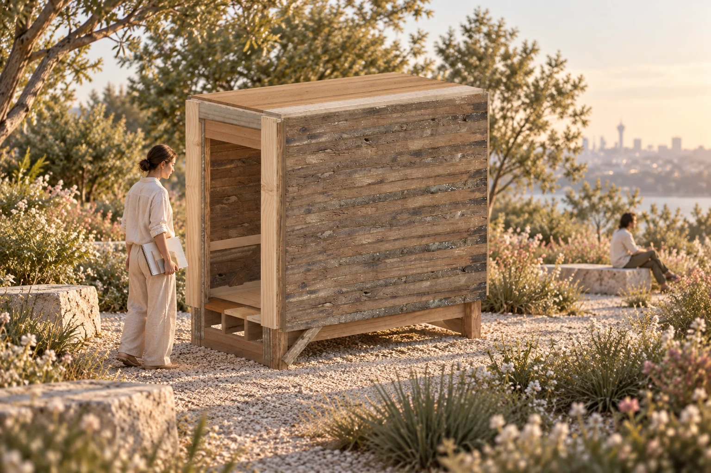

Retain & document
A visible feature may be acceptable for a particular use only after the applicable evidence and rules are checked. No universal crack or knot tolerance.
Loading saved evidence…
Source-linked reclaimed timber.
Stock-first design. Traceable assembly.
Reclaimed stock carries dimensions, quantity and incomplete evidence. A shared project connects those limits to design decisions, fabrication and assembly.

The Agent proposes. You confirm. MILP allocates the confirmed demand. Karamba evaluates the recorded analytical model.
MILP: mixed-integer linear programming. This presentation uses saved evidence and recorded runs.
Follow the design methodEach case starts independently from the complete recorded inventory.
A small public exhibition shelter

A continuous seat for resting and gathering

An open, gable-roof gathering space
Source identity, cutting intervals and installed positions remain connected. Saved calculations and representative appearance are documented separately from physical verification.
Seller photographs arrive with dimensions and descriptions.
Geometry, condition and usable length still need evidence.


Archived seller photographs and fields · 11 September 2026. Open the source link for the actual website; this card is not a webpage screenshot.
SOURCE → MASK → SPATIAL EVIDENCE
Start with the photographs and masks. Add the saved views one at a time, then compare their colored points with the existing photo-patch atlas.
THREE INPUTS, THREE MASKS
Each black-and-white mask identifies timber pixels in its own source photograph. VGGT spatial evidence and photo colors remain linked to those view IDs.
A / SPATIAL EVIDENCE
Drag to rotate · wheel to zoom · arrow keys to rotate. Photo colors are the default. View-ID colors are only a provenance key, not defects or depth.
B / APPEARANCE EVIDENCE

Independent projected patches, grouped by photograph. Transparent areas remain unknown. This saved atlas is not a seamless surface stitch or exact UV map.
These are saved pretrained SAM 2 masks and VGGT observations. Masks preserve per-image foreground evidence. The displayed arrows describe linked evidence records, not a claim that binary masks alone are VGGT's reconstruction input. View-to-view disagreement and partial coverage remain visible. VGGT is not a defect classifier; visible crack candidates and approximate source-length mapping are recorded separately.
Download the source-linked passport ↓CONDITION → DECISION
A crack candidate becomes a documented decision scenario—not an automatic grade or a claim of defect-free timber.
C01 / EXACT SAVED 3D CORRESPONDENCE
18 saved points locate the image candidate. Select a highlighted point, or focus the viewer and press Enter to cycle through the samples.
Orange = C01 correspondence, not measured crack depth. The candidate may also represent grain, a seam or shadow. Missing samples are not a void in the timber.
C01 is an image-space candidate linked to 18 saved 3D samples.
Seattle’s used dimension-lumber pathway has condition and product-scope prerequisites. No numerical crack-depth rule is established for this beam by these records.
Exclude the end region in a conservative research scenario. Not a code-certified rejection or acceptance.
A visible feature may be acceptable for a particular use only after the applicable evidence and rules are checked. No universal crack or knot tolerance.
The saved 115200 demonstration excludes the end region with a 20 mm research buffer.
A 600 mm demand fits the retained 828.24 mm segment; a 900 mm demand does not.
Consider another role or location if its requirements can be met. This is a decision option, not an executed regrading of this stock.
Unknown depth, hidden decay or missing views remain unresolved. Missing points are not proof of missing timber.
ACTUAL SOURCE / TWO SAVED PROBES
115200_001 · one seller-recorded piece · 1,104.9 mm nominal length.
*Approximate photo-to-length mapping from the saved endpoint anchors. The colored overlay is a scenario guide, not a measurement of a crack or a scaled scan. The ledger below gives the exact saved intervals, including kerf.
Open this source listing ↗

SAVED CONTROLLED EXPERIMENT / 115200_001
20 mm avoidance buffer · 3 mm preparation kerf
Source-length mapping uses approximate photo endpoints.
These saved isolated probes were not applied to the three final allocations. Retaining a segment does not certify its condition.
Buffer, kerf, machining allowance and fabrication tolerance are different quantities. No universal defect tolerance is inferred from the code.
Possible actions depend on defect type, location, product category and proposed use. The five choices above are a decision framework; only the displayed 600 / 900 mm probes are executed saved experiments.
Defect-to-rule evidence matrix ↓ · Saved Seattle code-pathway research ↓ · Exact interval and result records ↓FROM USABLE STOCK TO CUT PARTS
Actual source intervals from the saved Case 1 run. Multiple parts can come from the same board; surplus remains separate from installed parts.
Lengths in mm. Crosscut kerf is 3 mm. Section machining is accounted separately; a length cut does not silently change the stock section.
SOURCE-LINKED USABLE INVENTORY
A compact view of the material pool. The passport keeps the evidence; the inventory supplies the next design scenario.


Designed for repeatable updates as seller stock changes. This public-facing preview uses a saved snapshot, not a continuously polling live feed. New evidence can enter a new inventory version; accepted case runs keep their original snapshot.
Continue to designer + agent →HUMAN INTENT + RECORDED CONSTRAINTS
Use, site, form and material constraints are negotiated together. Replay an edited summary of the saved decisions.
Edited English paraphrase of saved user instructions, brief and decisions. Not a verbatim transcript, live API response or live weather query.
CONSTRAINT-BASED OPTIMIZATION
The existing pattern-based MILP matches demand to finite stock. The diagram shows constraint and correspondence layers, not a deep-learning model.
Scroll the diagram horizontally to read its labels.
Loading a saved source example…
ALLOCATION — MUSIC ONLY
Case 1 / the existing saved stock → cut part → building sequence. No material-processing introduction and no narration.
Saved-result allocation visualization. Not a validated physical assembly sequence.
One source → several installed positions
Select a cut part or click the model. Its original interval and parent board remain attached to its installed position.
Scroll the diagram horizontally to read its labels.
Select a source to follow all its parts.
Source-linked representative appearance; not a measured UV scan.
SAVED LOAD CASES / PRELIMINARY ELASTIC RESPONSE
Saved Karamba response. Highlight: maximum displacement.
Scroll the diagram horizontally to read its labels.

The same pipeline meets three different user needs and material strategies.
Explore the three cases →SAME PIPELINE · DIFFERENT DESIGN QUESTIONS
Compare what the user asked for and how the stock is assembled.
Each case starts independently from the complete recorded inventory.

Atmosphere study; inspect the saved allocated model below for exact geometry.USER INTENT
MATERIAL STRATEGY
Explore the decisions, allocation & response ↗USER INTENT
MATERIAL STRATEGY
Explore the decisions, allocation & response ↗USER INTENT
MATERIAL STRATEGY
Explore the decisions, allocation & response ↗| Recorded quantity | Case 1 | Case 2 | Case 3 |
|---|
Residual length belongs to selected stock. Untouched inventory is separate; surplus cut parts are not installed parts. Independent scenarios do not consume one another's stock.
CASE 01 / Mixed sections / multiple building roles
Connect framing, enclosure and supported seams within a finite stock pool.
BRIEF → DECISION
A small public exhibition shelter
Edited English paraphrase of saved user instructions, brief and decisions. Not a verbatim transcript, live API response or live weather query.
USER Design a small public-exhibition timber shelter in Seattle. Use the recorded reclaimed stock; keep the interior free of columns.
AGENT The saved brief identifies Seattle and the 2021 Seattle Building Code. A specific site, exposure and permit scope still need confirmation; today's weather is not a design load.
USER Allow cutting and supported jointing. Include the approved visible braces and backing in the material ledger.
AGENT Saved result: 155 installed parts from 87 source bars. Review the saved load cases and critical backing response separately from connection capacity.
Allocated braces and revised backing are represented in the saved building; loads from covering parts transfer to framing.
ALLOCATION LOGIC
One inventory supplies a hierarchy of parts, rather than one repeated component.
Original pattern-based MILP; authored/adapted geometry enters as demand. No new solve is performed by this page.
Saved allocation record ↓ALLOCATION PLAYBACK
Music only. Saved source-to-part-to-member relationships; no new allocation.
Allocation visualization, not a validated physical assembly sequence.
PRELIMINARY ELASTIC RESPONSE
Select a saved load case. Displacement values are unscaled; the drawing magnification is explicit.
Scroll the diagram horizontally to read its labels.
Four fixed post bases; declared simple bearings and fork restraints; three allocated braces. Foundation, fasteners and physical joint capacity remain unverified.
Allocation: ALLOC_20260929T103241_f1495f
Analysis: KARAMBA_BUILDING_20260929T103501_27f3a8
Case 1 building loads, Case 2 furniture patch loads and Case 3 pavilion loads differ. Their maximum displacements are not a common-load performance ranking.
CASE 02 / Straight strips / broad-face overlap
Retain the changing contour while fitting the complete demand to real stock quantities.
BRIEF → DECISION
A continuous seat for resting and gathering
Edited English paraphrase of saved user instructions, brief and decisions. Not a verbatim transcript, live API response or live weather query.
USER Keep the approved contour. Use straight strips with direct overlap; do not replace them with curved plywood ribs.
AGENT The thin-section stock cannot cover the full demand in the saved bounded pattern menu. A 38.1 × 88.9 mm family is available; section and spacing must change together.
USER Approve the full-stock version and the 125 mm computational minimum. Preserve the accepted local prototype.
AGENT Saved result: 716 strips, one shared stock ledger. Compare self-weight, central TOTAL 1 kN and eccentric TOTAL 1 kN under the accepted R03 connections.
38.1 × 88.9 mm sections and 76.2 mm station pitch replace the thin prototype family; all 716 strip IDs are retained.
ALLOCATION LOGIC
The stock section changes the repeating pitch and therefore the overall length.
Original pattern-based MILP; authored/adapted geometry enters as demand. No new solve is performed by this page.
Saved allocation record ↓ALLOCATION PLAYBACK
Music only. Saved source-to-part-to-member relationships; no new allocation.
Allocation visualization, not a validated physical assembly sequence.
PRELIMINARY ELASTIC RESPONSE
Select a saved load case. Displacement values are unscaled; the drawing magnification is explicit.
Scroll the diagram horizontally to read its labels.

R03: four terminal groups use three non-collinear idealized ties; other groups retain their recorded connections. Six unanchored levelling pads. Fastener capacity and bearing friction are unverified. R02 remains mechanism-diagnosis history.
Allocation: ALLOC_CASE2_FULL_20261003T072129Z_464628f7
Analysis: CASE2_KARAMBA_20261003T084216Z_R03_TERMINAL_TRIANGLES
Case 1 building loads, Case 2 furniture patch loads and Case 3 pavilion loads differ. Their maximum displacements are not a common-load performance ranking.
CASE 03 / Repeated frames / stock-adapted spans
Keep architectural scale and the open pavilion character while coordinating sections, spans and subdivisions.
BRIEF → DECISION
An open, gable-roof gathering space
Edited English paraphrase of saved user instructions, brief and decisions. Not a verbatim transcript, live API response or live weather query.
USER Use the pavilion as a design reference. Keep the open sides and gable roof, but adapt dimensions and framing to the full inventory.
AGENT This is an independent inventory scenario, not Case 2 leftovers. Coordinate spans, sections and subdivisions; include angled-cut blank allowances.
USER Preserve architectural scale and trace every installed member back to real stock. Use explicit connections, supports and load assumptions.
AGENT Saved result: 98 installed members. The preliminary wind response requires anchorage assumptions; site-specific compliance and physical anchor capacity remain unresolved.
The stock-adapted working layout retains repeated gable frames; angled-end allowances are included in cutting blanks.
ALLOCATION LOGIC
Inventory informs architectural dimensions before allocation checks the selected layout.
Original pattern-based MILP; authored/adapted geometry enters as demand. No new solve is performed by this page.
Saved allocation record ↓ALLOCATION PLAYBACK
Music only. Saved source-to-part-to-member relationships; no new allocation.
Allocation visualization, not a validated physical assembly sequence.
PRELIMINARY ELASTIC RESPONSE
Select a saved load case. Displacement values are unscaled; the drawing magnification is explicit.
Scroll the diagram horizontally to read its labels.

R02 pinned-cleat connection model and six conceptually anchored pinned foundations. Wind cases require unverified anchorage; roof covering, foundation design and joint capacity are unresolved.
Allocation: ALLOC_CASE3_PAVILION_20261005T095835Z_bd90274c
Analysis: CASE3_KARAMBA_20261005T101702Z_PINNED_CLEATS_R02
Case 1 building loads, Case 2 furniture patch loads and Case 3 pavilion loads differ. Their maximum displacements are not a common-load performance ranking.